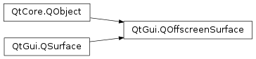

QOffscreenSurface¶
Note
This class was introduced in Qt 5.1.
Synopsis¶
Functions¶
- def
create() - def
destroy() - def
isValid() - def
nativeHandle() - def
requestedFormat() - def
screen() - def
setFormat(format) - def
setNativeHandle(handle) - def
setScreen(screen)
Signals¶
- def
screenChanged(screen)
Detailed Description¶
The
PySide2.QtGui.QOffscreenSurfaceclass represents an offscreen surface in the underlying platform.
PySide2.QtGui.QOffscreenSurfaceis intended to be used withPySide2.QtGui.QOpenGLContextto allow rendering with OpenGL in an arbitrary thread without the need to create aPySide2.QtGui.QWindow.Even though the surface is typically renderable, the surface’s pixels are not accessible.
PySide2.QtGui.QOffscreenSurfaceshould only be used to create OpenGL resources such as textures or framebuffer objects.An application will typically use
PySide2.QtGui.QOffscreenSurfaceto perform some time-consuming tasks in a separate thread in order to avoid stalling the main rendering thread. Resources created in thePySide2.QtGui.QOffscreenSurface‘s context can be shared with the main OpenGL context. Some common use cases are asynchronous texture uploads or rendering into aPySide2.QtGui.QOpenGLFramebufferObject.How the offscreen surface is implemented depends on the underlying platform, but it will typically use a pixel buffer (pbuffer). If the platform doesn’t implement or support offscreen surfaces,
PySide2.QtGui.QOffscreenSurfacewill use an invisiblePySide2.QtGui.QWindowinternally.Note
Due to the fact that
PySide2.QtGui.QOffscreenSurfaceis backed by aPySide2.QtGui.QWindowon some platforms, cross-platform applications must ensure thatPySide2.QtGui.QOffscreenSurface.create()is only called on the main (GUI) thread. ThePySide2.QtGui.QOffscreenSurfaceis then safe to be used withPySide2.QtGui.QOpenGLContext.makeCurrent()on other threads, but the initialization and destruction must always happen on the main (GUI) thread.Note
In order to create an offscreen surface that is guaranteed to be compatible with a given context and window, make sure to set the format to the context’s or the window’s actual format, that is, the
PySide2.QtGui.QSurfaceFormatreturned fromQOpenGLContext.format()orQWindow.format()after the context or window has been created . Passing the format returned fromQWindow.requestedFormat()toPySide2.QtGui.QOffscreenSurface.setFormat()may result in an incompatible offscreen surface since the underlying windowing system interface may offer a different set of configurations for window and pbuffer surfaces.Note
Some platforms may utilize a surfaceless context extension (for example EGL_KHR_surfaceless_context) when available. In this case there will be no underlying native surface. For the use cases of
PySide2.QtGui.QOffscreenSurface(rendering to FBOs, texture upload) this is not a problem.
-
class
PySide2.QtGui.QOffscreenSurface([screen=nullptr])¶ -
class
PySide2.QtGui.QOffscreenSurface(screen, parent) Parameters: - screen –
PySide2.QtGui.QScreen - parent –
PySide2.QtCore.QObject
Creates an offscreen surface for the
targetScreen.The underlying platform surface is not created until
PySide2.QtGui.QOffscreenSurface.create()is called.Creates an offscreen surface for the
targetScreenwith the givenparent.The underlying platform surface is not created until
PySide2.QtGui.QOffscreenSurface.create()is called.- screen –
-
PySide2.QtGui.QOffscreenSurface.create()¶ Allocates the platform resources associated with the offscreen surface.
It is at this point that the surface format set using
PySide2.QtGui.QOffscreenSurface.setFormat()gets resolved into an actual native surface.Call
PySide2.QtGui.QOffscreenSurface.destroy()to free the platform resources if necessary.Note
Some platforms require this function to be called on the main (GUI) thread.
-
PySide2.QtGui.QOffscreenSurface.destroy()¶ Releases the native platform resources associated with this offscreen surface.
-
PySide2.QtGui.QOffscreenSurface.isValid()¶ Return type: PySide2.QtCore.boolReturns
trueif this offscreen surface is valid; otherwise returnsfalse.The offscreen surface is valid if the platform resources have been successfuly allocated.
-
PySide2.QtGui.QOffscreenSurface.nativeHandle()¶ Return type: voidReturns an optional native handle to which the offscreen surface is connected.
-
PySide2.QtGui.QOffscreenSurface.requestedFormat()¶ Return type: PySide2.QtGui.QSurfaceFormatReturns the requested surfaceformat of this offscreen surface.
If the requested format was not supported by the platform implementation, the will differ from the actual offscreen surface format.
This is the value set with
PySide2.QtGui.QOffscreenSurface.setFormat().See also
PySide2.QtGui.QOffscreenSurface.setFormat()PySide2.QtGui.QOffscreenSurface.format()
-
PySide2.QtGui.QOffscreenSurface.screen()¶ Return type: PySide2.QtGui.QScreenReturns the screen to which the offscreen surface is connected.
-
PySide2.QtGui.QOffscreenSurface.screenChanged(screen)¶ Parameters: screen – PySide2.QtGui.QScreen
-
PySide2.QtGui.QOffscreenSurface.setFormat(format)¶ Parameters: format – PySide2.QtGui.QSurfaceFormatSets the offscreen surface
format.The surface format will be resolved in the
PySide2.QtGui.QOffscreenSurface.create()function. Calling this function afterPySide2.QtGui.QOffscreenSurface.create()will not re-resolve the surface format of the native surface.See also
PySide2.QtGui.QOffscreenSurface.format()PySide2.QtGui.QOffscreenSurface.create()PySide2.QtGui.QOffscreenSurface.destroy()
-
PySide2.QtGui.QOffscreenSurface.setNativeHandle(handle)¶ Parameters: handle – voidSets the native handle to which the offscreen surface is connected to
handle.The native handle will be resolved in the
PySide2.QtGui.QOffscreenSurface.create()function. Calling this function afterPySide2.QtGui.QOffscreenSurface.create()will not re-create a native surface.Note
The interpretation of the native handle is platform specific. Only some platforms will support adopting native handles of offscreen surfaces and platforms that do not implement this support will ignore the handle.
-
PySide2.QtGui.QOffscreenSurface.setScreen(screen)¶ Parameters: screen – PySide2.QtGui.QScreenSets the screen to which the offscreen surface is connected.
If the offscreen surface has been created, it will be recreated on the
newScreen.
© 2018 The Qt Company Ltd. Documentation contributions included herein are the copyrights of their respective owners. The documentation provided herein is licensed under the terms of the GNU Free Documentation License version 1.3 as published by the Free Software Foundation. Qt and respective logos are trademarks of The Qt Company Ltd. in Finland and/or other countries worldwide. All other trademarks are property of their respective owners.